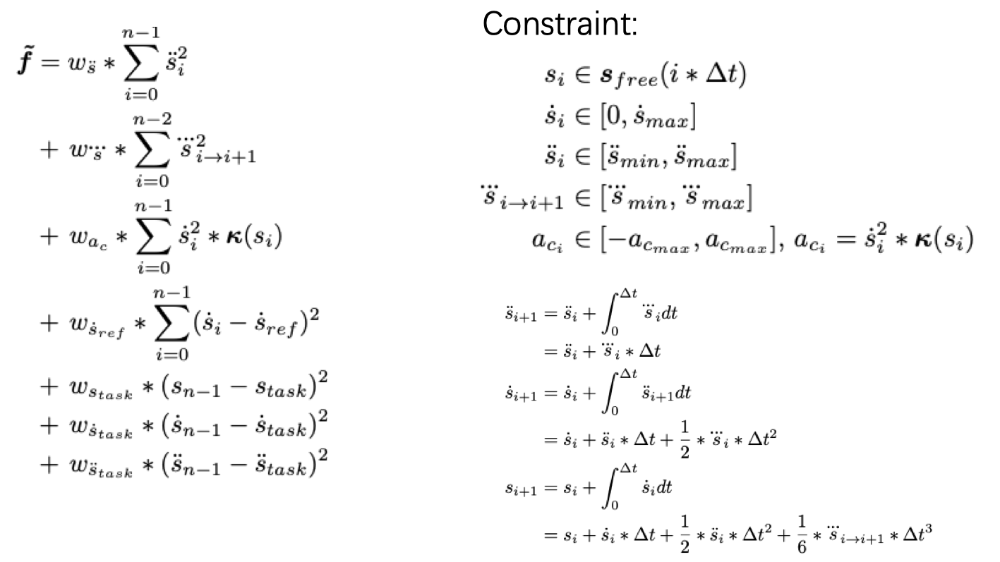

Planning Piecewise Jerk Nonlinear Speed Optimizer Introduction¶
Introduction¶
This is an introduction of piecewise jerk nonlinear speed optimizer. For trajectory planning problems, the following three aspects need to be considered: 1)Task accomplishment. 2)Safety. 3)Comfort.
After a smooth driving guide line is generated, the trajectory is under the constraints of velocity bounds, acceleration bounds, jerk bounds, etc. Here, we formulate this problem as a quadratic programming problem.
Where is the code¶
Please refer code
Code Reading¶
 PiecewiseJerkSpeedNonlinearOptimizer is a derived class whose base class is SpeedOptimizer. Thus, when task::Execute() is called in the task list, the Process() in PiecewiseJerkSpeedNonlinearOptimizer is actually doing the processing.
PiecewiseJerkSpeedNonlinearOptimizer is a derived class whose base class is SpeedOptimizer. Thus, when task::Execute() is called in the task list, the Process() in PiecewiseJerkSpeedNonlinearOptimizer is actually doing the processing.
Input.
The input includes PathData and initial TrajectoryPoint.Process.
Snaity Check. This ensures speed_data is not null and Speed Optimizer does not receive empty path data.
const auto problem_setups_status = SetUpStatesAndBounds(path_data, *speed_data);The qp problem is initialized here. The next code line will clear speed_data if it fails.const auto qp_smooth_status = OptimizeByQP(speed_data, &distance, &velocity, &acceleration);It sloves the QP problem and the distance/velocity/acceleration are achieved. Still, speed_data is cleared if it fails.const bool speed_limit_check_status = CheckSpeedLimitFeasibility();It checks first point of speed limit. Then the following four steps are processed: 1)Smooth Path Curvature 2)SmoothSpeedLimit 3)Optimize By NLP 4)Record speed_constraintAdd s/t/v/a/jerk into speed_data and add enough zeros to avoid fallback
Output.
The output is SpeedData, which includes s/t/v/a/jerk of the trajectory.
Algorithm Detail¶
Paper Reference:
Optimal Trajectory Generation for Autonomous Vehicles UnderCentripetal Acceleration Constraints for In-lane Driving Scenarios
DL-IAPS and PJSO: A Path/Speed Decoupled Trajectory Optimization and its Application in Autonomous Driving
